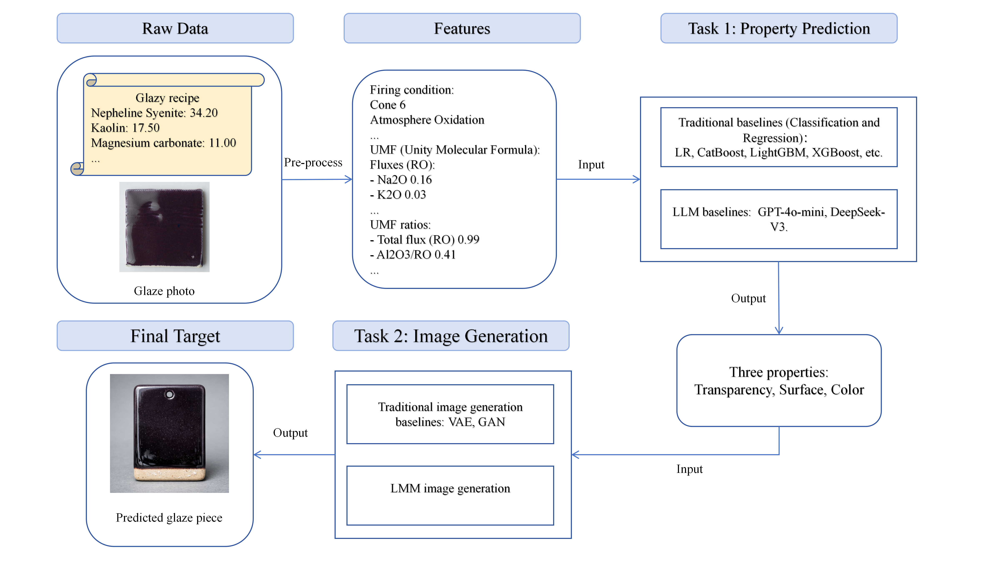
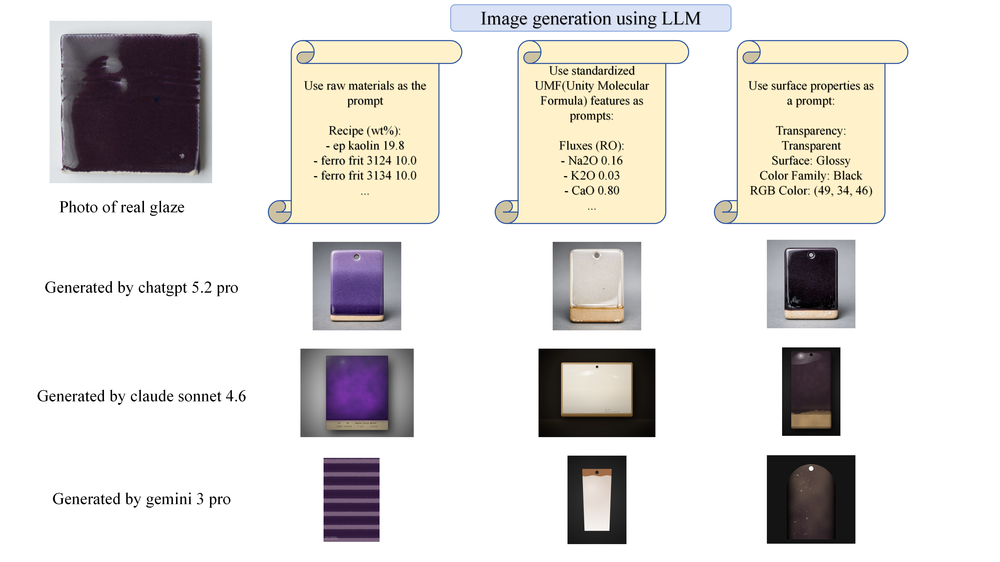
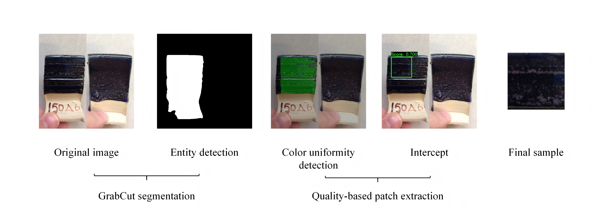

Real evidence: figures and tables extracted from an arxiv PDF via the WikiMind API
Downloaded and ingested a 9-page arxiv paper (GlazyBench) containing figures and tables.
$ curl -sL "https://arxiv.org/pdf/2605.06641" -o /tmp/glazybench.pdf $ file /tmp/glazybench.pdf /tmp/glazybench.pdf: PDF document, version 1.7, 9 pages $ curl -s -X POST http://127.0.0.1:7842/api/ingest/pdf \ -H "Authorization: Bearer $TOKEN" \ -F "file=@/tmp/glazybench.pdf" { "title": "GlazyBench: A Benchmark for Ceramic Glaze Property Prediction and Image Generation", "user_id": "dev@wikimind.dev", "source_type": "pdf", "published_date": null, "ingested_at": "2026-05-09T16:49:21.263109", "token_count": 16393, "file_path": "e1c572ce-22e0-4965-9f95-aa96b232a573.txt", "content_hash": "b0278309b3b2a23c6a9ae43153be1002fd8e1c7d3af232d67cefd345d0909cac", "source_url": null, "id": "e1c572ce-22e0-4965-9f95-aa96b232a573", "author": "Ziyu Zhai; Siyou Li; Juexi Shao; Juntao Yu", "status": "compiled", "compiled_at": "2026-05-09T16:49:28.993133", "error_message": null, "has_original": true }
PASS PDF ingested and compiled successfully. Author metadata extracted. 16,393 tokens.
The /images endpoint returns metadata for each figure and table extracted from the PDF.
$ curl -s http://127.0.0.1:7842/api/ingest/sources/e1c572ce-22e0-4965-9f95-aa96b232a573/images \
-H "Authorization: Bearer $TOKEN"
[
{
"filename": "picture-1.png",
"kind": "figure",
"label": "Figure 1"
},
{
"filename": "picture-2.png",
"kind": "figure",
"label": "Figure 2"
},
{
"filename": "table-1.png",
"kind": "table",
"label": "Table 1"
}
]
PASS 3 images extracted: 2 figures + 1 table. Each entry includes filename, kind, and label.
Each image is served individually via /images/{filename}.
$ curl -s http://127.0.0.1:7842/api/ingest/sources/{source_id}/images/picture-1.png \
-H "Authorization: Bearer $TOKEN" \
-o extracted-figure.png
$ file extracted-figure.png
extracted-figure.png: PNG image data, 4800 x 2700, 8-bit/color RGB, non-interlaced
PASS Image downloaded as a real PNG file (1.6 MB, 4800x2700).
These are the real images extracted from the GlazyBench PDF by WikiMind's PDF adapter:



$ curl -s http://127.0.0.1:7842/api/ingest/sources/e1c572ce-22e0-4965-9f95-aa96b232a573 \
-H "Authorization: Bearer $TOKEN"
{
"title": "GlazyBench: A Benchmark for Ceramic Glaze Property Prediction and Image Generation",
"user_id": "dev@wikimind.dev",
"source_type": "pdf",
"published_date": null,
"ingested_at": "2026-05-09T16:49:21.263109",
"token_count": 16393,
"file_path": "e1c572ce-22e0-4965-9f95-aa96b232a573.txt",
"content_hash": "b0278309b3b2a23c6a9ae43153be1002fd8e1c7d3af232d67cefd345d0909cac",
"source_url": null,
"id": "e1c572ce-22e0-4965-9f95-aa96b232a573",
"author": "Ziyu Zhai; Siyou Li; Juexi Shao; Juntao Yu",
"status": "compiled",
"compiled_at": "2026-05-09T16:49:28.993133",
"error_message": null,
"has_original": true
}
PASS Source fully compiled with original PDF preserved (has_original: true).
Evidence generated 2026-05-09 from a live WikiMind instance (port 7842, auth enabled). All API responses are real curl output. Images are actual PNGs extracted from arxiv:2605.06641 (GlazyBench).